用 NLP 做文本分析和特征工程
本文使用NLP和Python 解释如何分析文本数据和提取特征。
NLP（Natural Language Processing，自然语言处理）是研究计算机与人类语言之间相互作用的人工智能领域，特别是如何对计算机进行编程，以处理和分析大量的自然语言数据。NLP常被应用于文本数据的分类。文本分类就是根据文本数据的内容给文本数据分配类别的问题。文本分类中最重要的部分是特征工程：从原始文本数据创建机器学习模型的特征的过程。
在本文中，我将解释不同的方法来分析文本并提取可用于建立分类模型的特征。我将介绍一些有用的Python代码，这些代码可以很容易地应用在其他类似的情况下（只需复制、粘贴、运行），并通过每一行代码的注释进行演练，以便您可以复制这个例子（链接到下面的完整代码）。
Natural Language Processing - Text Classification example
我将使用新闻类别数据集，在该数据集中，你将获得从HuffPost获得的2012年至2018年的新闻标题，并要求你用正确的类别对其进行分类。
具体来说，我将逐步讲解：
- 环境设置：导入包，读取数据。
- 语言检测：了解哪些自然语言数据。
- 文本预处理：文本清洗和转换。
- 长度分析：用不同的指标来衡量。
- 情感分析：判断一个文本是正面还是负面。
- 命名-实体识别：用预先定义的类别给文本打上标签，如人名、组织、地点。
- 词频：找到最重要的n-grams。
- 词向量：将一个词转化为数字。
- 主题建模：从语料库中提取主要主题。
设置
首先，我需要导入以下库。
1
2
3
4
5
6
7
8
9
10
11
12
13
14
15
16
17
18
19
20
21
22
23 | ## for data
import pandas as pd
import collections
import json
## for plotting
import matplotlib.pyplot as plt
import seaborn as sns
import wordcloud
## for text processing
import re
import nltk
## for language detection
import langdetect
## for sentiment
from textblob import TextBlob
## for ner
import spacy
## for vectorizer
from sklearn import feature_extraction, manifold
## for word embedding
import gensim.downloader as gensim_api
## for topic modeling
import gensim
|
数据集包含在 json 文件中，因此我将首先将其读入包含 json 包的字典列表，然后将其转换为pandas dataframe。
| lst_dics = []
with open('data.json', mode='r', errors='ignore') as json_file:
for dic in json_file:
lst_dics.append( json.loads(dic) )
## print the first one
lst_dics[0]
|
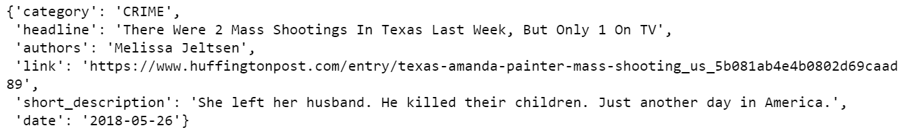
原始数据集包含 30 多个类别，但出于本教程的目的，我将使用 3 个子集：娱乐、政治和技术(Entertainment, Politics, Tech)。
| ## create dtf
dtf = pd.DataFrame(lst_dics)
## filter categories
dtf = dtf[ dtf["category"].isin(['ENTERTAINMENT','POLITICS','TECH']) ][["category","headline"]]
## rename columns
dtf = dtf.rename(columns={"category":"y", "headline":"text"})
## print 5 random rows
dtf.sample(5)
|
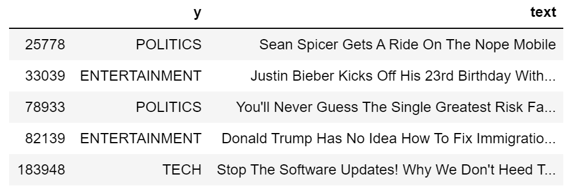
为了了解数据集的组成，我将通过用条形图显示标签频率来研究单向分布（只有一个变量的概率分布）。
| x = "y"
fig, ax = plt.subplots()
fig.suptitle(x, fontsize=12)
dtf[x].reset_index().groupby(x).count().sort_values(by=
"index").plot(kind="barh", legend=False,
ax=ax).grid(axis='x')
plt.show()
|
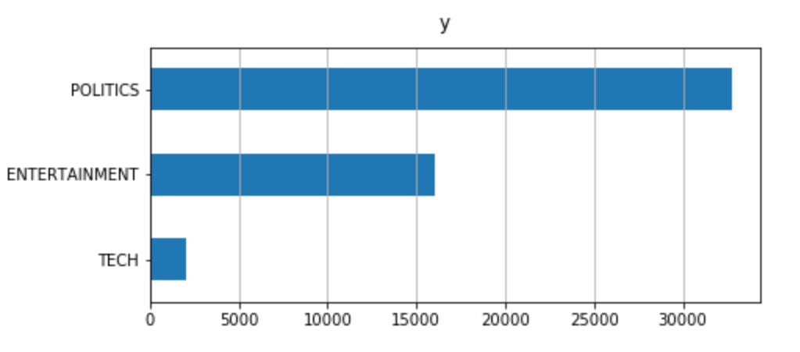
数据集不平衡：与其他新闻相比，Tech 新闻的比例非常小。这在建模过程中可能会产生问题，再抽样重建数据集可能会有用。
现在，一切都已设置，我将首先清理数据，然后我将从原始文本中提取不同的见解，并将它们添加为数据框架的新列。此新信息可用作分类模型的潜在特征。
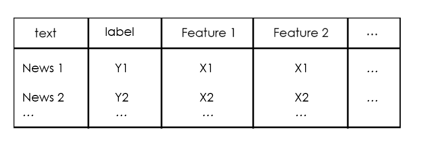
我们开始吧，
语言检测
首先，我想确保所有新闻使用相同语言，这可以用langdetect包很容易地实现。为了说明这一点，我将将其用于数据集的第一个新闻标题：
| txt = dtf["text"].iloc[0]
print(txt, " --> ", langdetect.detect(txt))
|
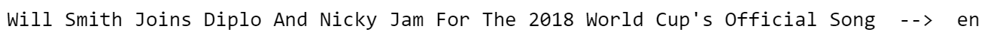
让我们通过添加带有语言信息的列来为整个数据集进行：
| dtf['lang'] = dtf["text"].apply(lambda x: langdetect.detect(x) if
x.strip() != "" else "")
dtf.head()
|
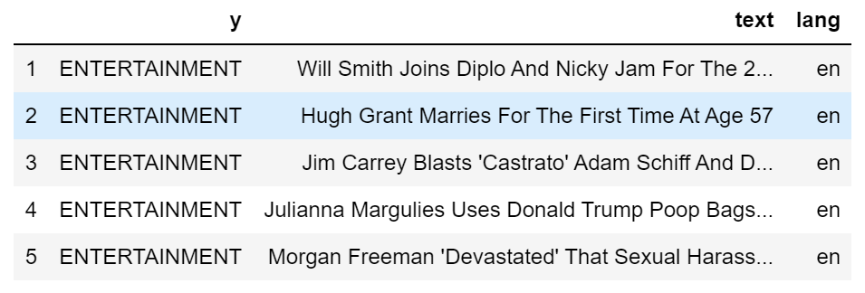
数据框架现在有一个新的列。使用以前相同的代码，我可以看到有多少不同的语言：
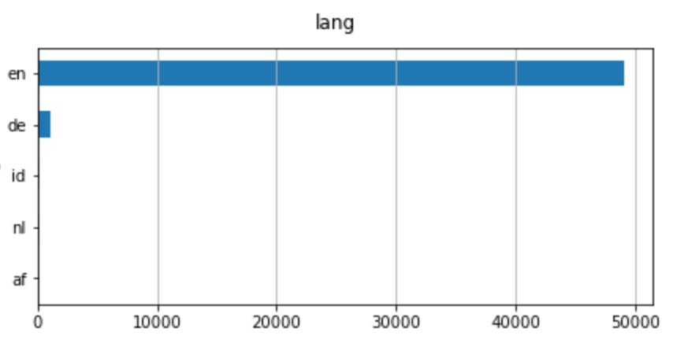
即使有不同的语言，英语也是主要语言。因此，我要用英语过滤新闻。
| dtf = dtf[dtf["lang"]=="en"]
|
文本预处理
数据预处理是准备原始数据以使其适合机器学习模型的阶段。对于 NLP，包括文本清理、删除停词、原型和词法化。
文本清理步骤因数据类型和所需任务而异。通常，字符串被转换为小写字母，标点符号在文本被标记之前被删除。 分词是将字符串拆分为字符串列表（或"token"）的过程。
让我们再次使用第一个新闻标题作为示例：
| print("--- original ---")
print(txt)
print("--- cleaning ---")
txt = re.sub(r'[^\w\s]', '', str(txt).lower().strip())
print(txt)
print("--- tokenization ---")
txt = txt.split()
print(txt)
|
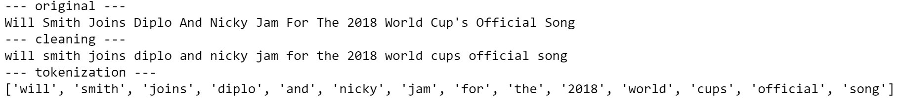
我们是否希望将所有token保留在列表中？事实上，我们删除所有不提供额外信息的词语。在示例中，最重要的词是"song"，因为它可以将任何分类模型指向正确的方向。相比之下，诸如"and"、"for"、"the"之类的词并不有用，因为它们可能出现在数据集中几乎每一个观察序列中。这些都是停词的例子。
我们可以创建一个通用停词列表的英语词汇,NLTK，这是一套库和函数的符号和统计自然语言处理。
| lst_stopwords = nltk.corpus.stopwords.words("english")
lst_stopwords
|
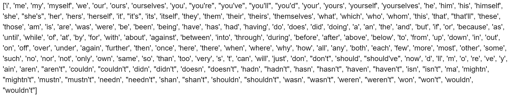
让我们从第一个新闻标题中删除这些停止词：
| print("--- remove stopwords ---")
txt = [word for word in txt if word not in lst_stopwords]
print(txt)
|
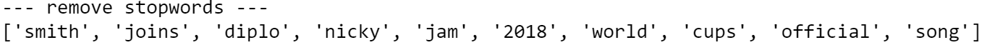
我们需要非常小心删除停词，因为如果你删除错误的token，你可能会失去重要的信息。例如，"will"一词被删除，我们丢失了这个人是Will Smith的信息。考虑到这一点，在删除停词之前对原始文本进行一些手动修改是有用的（例如，将"Will Smith"替换为"Will_Smith"）。
现在，我们拥有了所有有用的token，我们可以应用单词转换。 stem和Lemmatization都产生单词的根形式。不同的是， stem可能不是一个实际的单词，而lemma 是一个实际的语言单词。这些算法均由 NLTK 提供。
继续示例：
| print("--- stemming ---")
ps = nltk.stem.porter.PorterStemmer()
print([ps.stem(word) for word in txt])
print("--- lemmatisation ---")
lem = nltk.stem.wordnet.WordNetLemmatizer()
print([lem.lemmatize(word) for word in txt])
|
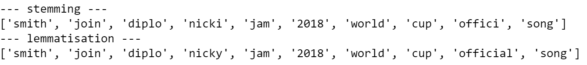
正如你所看到的，有些词已经改变了："joins"变成了原型"join"，就像"cups"。另一方面，"official"只是随着茎"offici"而改变，这不是一个词，通过删除后缀"-al"而创建。
我将把所有这些预处理步骤放入一个单一的函数中，并将其应用到整个数据集中。
1
2
3
4
5
6
7
8
9
10
11
12
13
14
15
16
17
18
19
20
21
22
23
24
25
26
27
28
29
30
31
32
33
34 | '''
Preprocess a string.
:parameter
:param text: string - name of column containing text
:param lst_stopwords: list - list of stopwords to remove
:param flg_stemm: bool - whether stemming is to be applied
:param flg_lemm: bool - whether lemmitisation is to be applied
:return
cleaned text
'''
def utils_preprocess_text(text, flg_stemm=False, flg_lemm=True, lst_stopwords=None):
## clean (convert to lowercase and remove punctuations and characters and then strip)
text = re.sub(r'[^\w\s]', '', str(text).lower().strip())
## Tokenize (convert from string to list)
lst_text = text.split()
## remove Stopwords
if lst_stopwords is not None:
lst_text = [word for word in lst_text if word not in
lst_stopwords]
## Stemming (remove -ing, -ly, ...)
if flg_stemm == True:
ps = nltk.stem.porter.PorterStemmer()
lst_text = [ps.stem(word) for word in lst_text]
## Lemmatisation (convert the word into root word)
if flg_lemm == True:
lem = nltk.stem.wordnet.WordNetLemmatizer()
lst_text = [lem.lemmatize(word) for word in lst_text]
## back to string from list
text = " ".join(lst_text)
return text
|
请注意，您不应该同时应用stem和lemmatization。在这里，我要使用lemmatization。
| dtf["text_clean"] = dtf["text"].apply(lambda x: utils_preprocess_text(x, flg_stemm=False, flg_lemm=True, lst_stopwords))
|
和以前一样，我创建了一个新列:
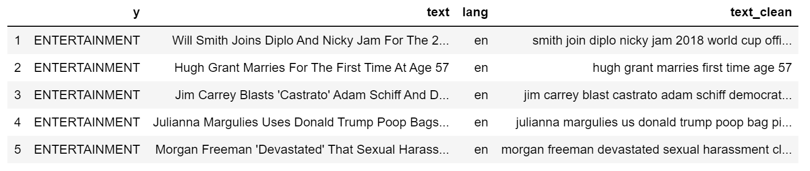
| print(dtf["text"].iloc[0], " --> ", dtf["text_clean"].iloc[0])
|
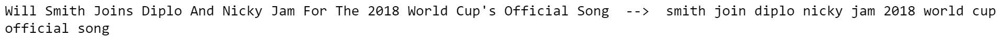
长度分析
查看文本的长度很重要，因为它是一种简单的计算方法，可以提供大量的见解。例如，也许我们很幸运地发现，一个类别系统地比另一个类别长，长度只是构建模型所需的唯一功能。不幸的是，这不会是这样，因为新闻头条有类似的长度，但它是值得一试。
文本数据有几个长度度量。我会举一些例子：
- 字数 ：计算文本中的token数量（由空格分离）
- 字符计数 ：将每个token的字符数相总
- 句子计数 ：计算句子数（按句点分离）
- 平均单词长度 ：单词长度之和除以单词数（字符计数/单词计数）
- 平均句子长度 ：句子长度之和除以句子数（字数/句子数）
| dtf['word_count'] = dtf["text"].apply(lambda x: len(str(x).split(" ")))
dtf['char_count'] = dtf["text"].apply(lambda x: sum(len(word) for word in str(x).split(" ")))
dtf['sentence_count'] = dtf["text"].apply(lambda x: len(str(x).split(".")))
dtf['avg_word_length'] = dtf['char_count'] / dtf['word_count']
dtf['avg_sentence_lenght'] = dtf['word_count'] / dtf['sentence_count']
dtf.head()
|
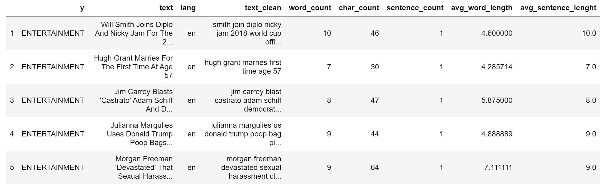
让我们看看我们通常的例子：
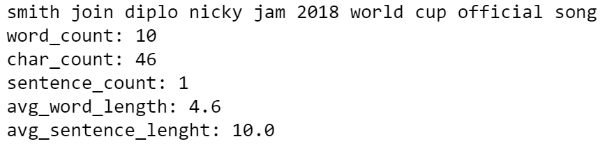
这些新变量与目标的分布情况如何？要回答这个问题，我将查看双变量分布（两个变量如何一起移动）。首先，我将整组观测结果分成3个样本（政治、娱乐、技术），然后比较样本的直方图和密度。如果分布不同，则变量是预测性的，因为 3 组具有不同的模式。
例如，让我们看看字符计数是否与目标变量相关：
1
2
3
4
5
6
7
8
9
10
11
12
13
14 | x, y = "char_count", "y"
fig, ax = plt.subplots(nrows=1, ncols=2)
fig.suptitle(x, fontsize=12)
for i in dtf[y].unique():
sns.distplot(dtf[dtf[y]==i][x], hist=True, kde=False,
bins=10, hist_kws={"alpha":0.8},
axlabel="histogram", ax=ax[0])
sns.distplot(dtf[dtf[y]==i][x], hist=False, kde=True,
kde_kws={"shade":True}, axlabel="density",
ax=ax[1])
ax[0].grid(True)
ax[0].legend(dtf[y].unique())
ax[1].grid(True)
plt.show()
|
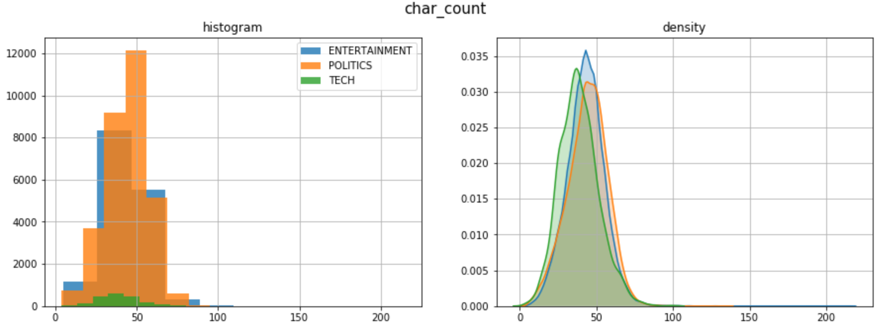
这3个类别的长度分布相似。在这里，密度图是非常有用的，因为样本有不同的大小。
情绪分析
情绪分析是文本数据通过数字或类的主观情绪的表示。计算情绪是NLP最艰难的任务之一，因为自然语言充满了模糊性。例如，"This is so bad that it’s good"这句话有不止一个解释。模型可以给"good"一词分配一个积极信号，给"bad"一词分配一个负面信号，从而产生中性情绪。之所以发生这种情况，是因为上下文未知。
最好的方法是训练自己的情绪模型，以正确适应您的数据。当没有足够的时间或数据时，可以使用预先训练的模型，如 Textblob 和 Vader。 Textblob，建立在NLTK之上，是最流行的，它可以分配极性的话，并估计整个文本的情绪作为一个平均。另一方面 Vader Valence意识词典和情绪推理器）是一种基于规则的模型，在社交媒体数据上特别有效。
我用Textblob添加一个情绪特征：
| dtf["sentiment"] = dtf["text_clean"].apply(lambda x:
TextBlob(x).sentiment.polarity)
dtf.head()
|
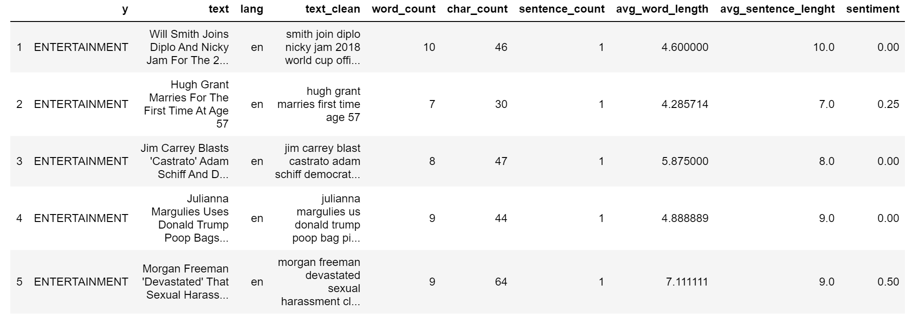
| print(dtf["text"].iloc[0], " --> ", dtf["sentiment"].iloc[0])
|
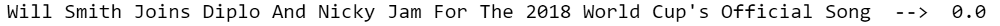
类别和情绪之间是否有模式？
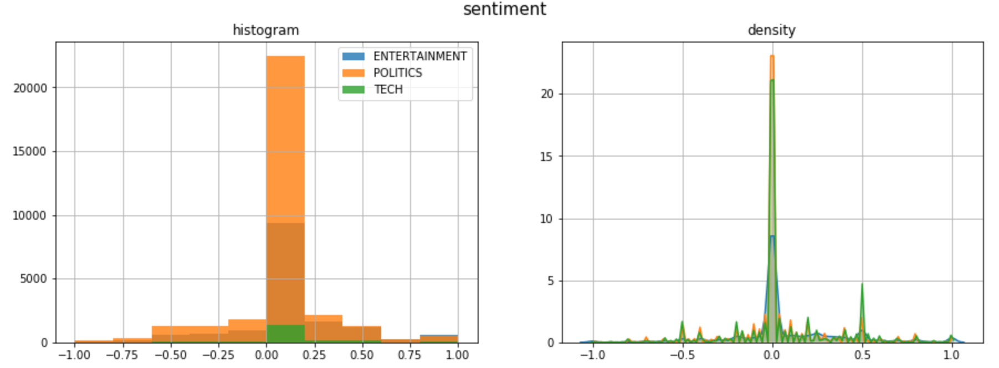
大多数头条新闻都有中性情绪，除了负面尾巴上偏斜的政治新闻，以及正面尾巴上尖峰的科技新闻。
命名实体识别 NER
NER命名实体识别是指用预先定义的类别（如人名、组织、地点、时间表达、数量等）标记非结构化文本中提及的命名实体的过程。
训练NER模型非常耗时，因为它需要一个相当丰富的数据集。幸运的是，有人已经为我们做了这项工作。最好的开源NER工具之一是 SpaCy。它提供了不同的 NLP 模型，能够识别多个类别的实体。
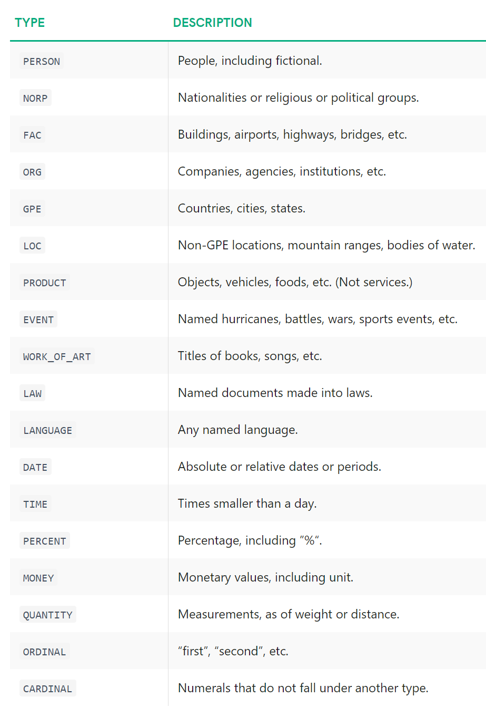source: SpaCy
我将举一个例子，使用 SpaCy 模型en_core_web_lg（在 Web 数据上训练的英语大模型）在我们的通常标题（原始文本，而不是预处理）：
| ## call model
ner = spacy.load("en_core_web_lg")
## tag text
txt = dtf["text"].iloc[0]
doc = ner(txt)
## display result
spacy.displacy.render(doc, style="ent")
|
这很酷， 但我们怎样才能把它变成一个有用的功能呢？这就是我要做的：
1
2
3
4
5
6
7
8
9
10
11
12
13
14
15
16
17
18
19
20
21
22
23
24
25
26
27
28
29
30
31
32
33
34
35
36
37
38
39
40
41
42
43
44
45 | ## tag text and exctract tags into a list
dtf["tags"] = dtf["text"].apply(lambda x: [(tag.text, tag.label_)
for tag in ner(x).ents] )
## utils function to count the element of a list
def utils_lst_count(lst):
dic_counter = collections.Counter()
for x in lst:
dic_counter[x] += 1
dic_counter = collections.OrderedDict(
sorted(dic_counter.items(),
key=lambda x: x[1], reverse=True))
lst_count = [ {key:value} for key,value in dic_counter.items() ]
return lst_count
## count tags
dtf["tags"] = dtf["tags"].apply(lambda x: utils_lst_count(x))
## utils function create new column for each tag category
def utils_ner_features(lst_dics_tuples, tag):
if len(lst_dics_tuples) > 0:
tag_type = []
for dic_tuples in lst_dics_tuples:
for tuple in dic_tuples:
type, n = tuple[1], dic_tuples[tuple]
tag_type = tag_type + [type]*n
dic_counter = collections.Counter()
for x in tag_type:
dic_counter[x] += 1
return dic_counter[tag]
else:
return 0
## extract features
tags_set = []
for lst in dtf["tags"].tolist():
for dic in lst:
for k in dic.keys():
tags_set.append(k[1])
tags_set = list(set(tags_set))
for feature in tags_set:
dtf["tags_"+feature] = dtf["tags"].apply(lambda x:
utils_ner_features(x, feature))
## print result
dtf.head()
|
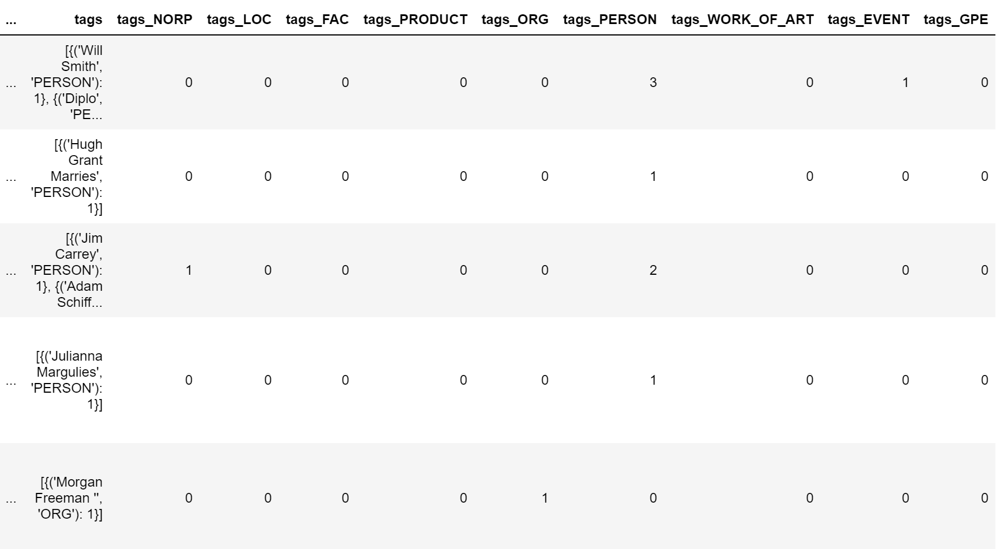
现在，我们可以对标记类型分布进行宏观查看。让我们以 ORG 标签（公司和组织）为例：
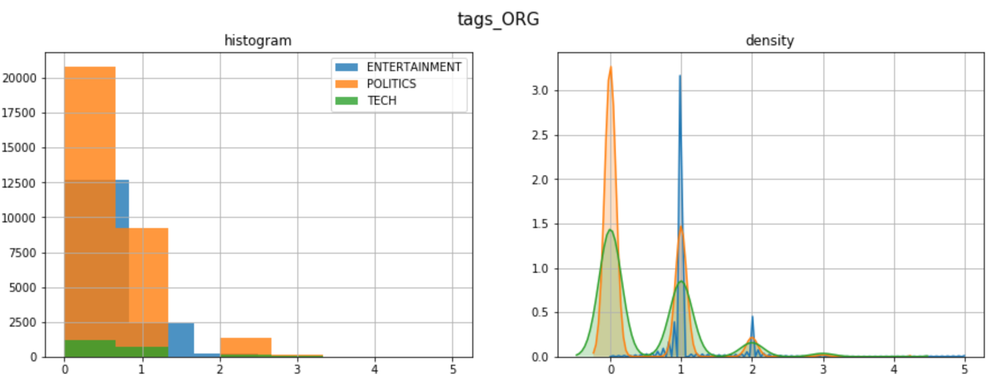
为了深入分析，我们需要拆开我们在上一个代码中创建的列"标签"。让我们为标题类别之一绘制最常见的标签：
1
2
3
4
5
6
7
8
9
10
11
12
13
14
15 | y = "ENTERTAINMENT"
tags_list = dtf[dtf["y"]==y]["tags"].sum()
map_lst = list(map(lambda x: list(x.keys())[0], tags_list))
dtf_tags = pd.DataFrame(map_lst, columns=['tag','type'])
dtf_tags["count"] = 1
dtf_tags = dtf_tags.groupby(['type',
'tag']).count().reset_index().sort_values("count",
ascending=False)
fig, ax = plt.subplots()
fig.suptitle("Top frequent tags", fontsize=12)
sns.barplot(x="count", y="tag", hue="type",
data=dtf_tags.iloc[:10,:], dodge=False, ax=ax)
ax.grid(axis="x")
plt.show()
|
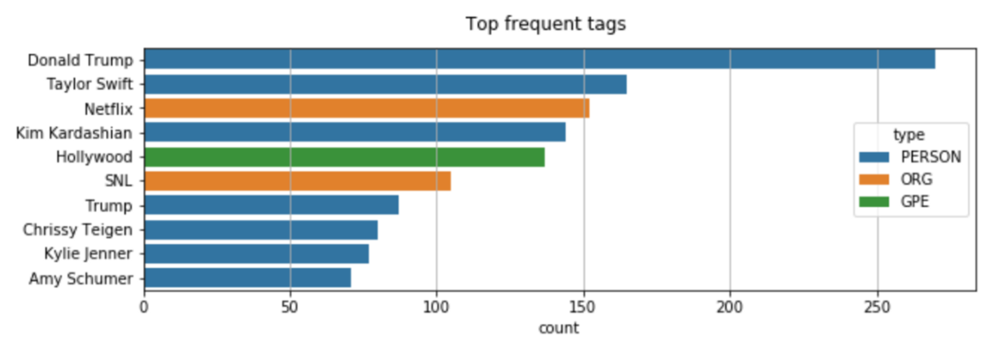
继续使用NER的另一个有用的应用：你还记得当我们从"Will Smith"的名称中删除失去"Will"字样的停止词吗？这个问题的一个有趣的解决方案是将"Will Smith"替换为"Will_Smith"，这样它就不会受到停止词删除的影响。由于要通过数据集中的所有文本来更改名称是不可能的，让我们使用 SpaCy 来实现这一点。如我们所知，SpaCy 可以识别一个人的名字，因此我们可以使用它进行 名称检测 ，然后修改字符串。
| ## predict wit NER
txt = dtf["text"].iloc[0]
entities = ner(txt).ents
## tag text
tagged_txt = txt
for tag in entities:
tagged_txt = re.sub(tag.text, "_".join(tag.text.split()),
tagged_txt)
## show result
print(tagged_txt)
|
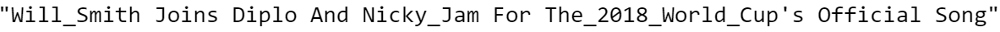
词频
到目前为止，我们已经看到了如何通过分析和处理整个文本来做特征工程。现在，我们将通过计算n-gram频率来研究单个单词的重要性。 n-gram 是给定文本示例中 n 项的连续词序列。当 n-gram 的大小为 1 时称为unigram（为 2 时是bigram）。
例如，"I like this article"一词可以分解为：
- 4 unigrams: “I”, “like”, “this”, “article”
- 3 bigrams: “I like”, “like this”, “this article”
我将展示如何计算unigram和bigram频率采取政治新闻的样本。
1
2
3
4
5
6
7
8
9
10
11
12
13
14
15
16
17
18
19
20
21
22
23
24
25
26 | y = "POLITICS"
corpus = dtf[dtf["y"]==y]["text_clean"]
lst_tokens = nltk.tokenize.word_tokenize(corpus.str.cat(sep=" "))
fig, ax = plt.subplots(nrows=1, ncols=2)
fig.suptitle("Most frequent words", fontsize=15)
## unigrams
dic_words_freq = nltk.FreqDist(lst_tokens)
dtf_uni = pd.DataFrame(dic_words_freq.most_common(),
columns=["Word","Freq"])
dtf_uni.set_index("Word").iloc[:top,:].sort_values(by="Freq").plot(
kind="barh", title="Unigrams", ax=ax[0],
legend=False).grid(axis='x')
ax[0].set(ylabel=None)
## bigrams
dic_words_freq = nltk.FreqDist(nltk.ngrams(lst_tokens, 2))
dtf_bi = pd.DataFrame(dic_words_freq.most_common(),
columns=["Word","Freq"])
dtf_bi["Word"] = dtf_bi["Word"].apply(lambda x: " ".join(
string for string in x) )
dtf_bi.set_index("Word").iloc[:top,:].sort_values(by="Freq").plot(
kind="barh", title="Bigrams", ax=ax[1],
legend=False).grid(axis='x')
ax[1].set(ylabel=None)
plt.show()
|
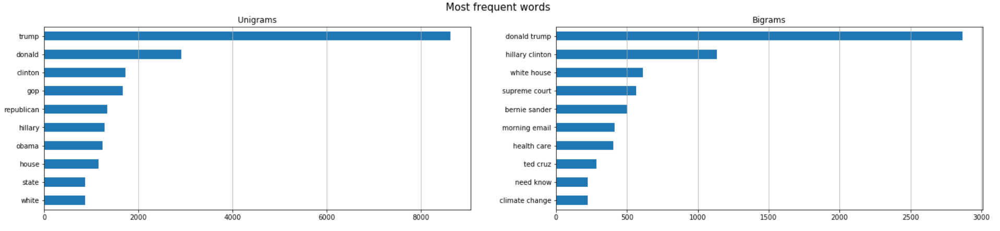
如果只有一个类别（即政治新闻中的"Republican"）中出现 n-grams，则这些可以成为新特征。一种更费力的方法是将整个语料库向量化，并将所有单词用作特征（词袋法）。
现在，我将向您展示如何在数据帧中添加单词频率作为特征。我们使用Scikit-learn 的CountVectorizer， Python 中最受欢迎的机器学习库之一。矢量器将文本文档集转换为token计数矩阵。我将举一个例子， 使用3 n-grams: “box office”（娱乐新闻中高频词）， "共和republican" （政治新闻高频词）， "apple" （技术新闻高频词）。
| lst_words = ["box office", "republican", "apple"]
## count
lst_grams = [len(word.split(" ")) for word in lst_words]
vectorizer = feature_extraction.text.CountVectorizer(
vocabulary=lst_words,
ngram_range=(min(lst_grams),max(lst_grams)))
dtf_X = pd.DataFrame(vectorizer.fit_transform(dtf["text_clean"]).todense(), columns=lst_words)
## add the new features as columns
dtf = pd.concat([dtf, dtf_X.set_index(dtf.index)], axis=1)
dtf.head()
|
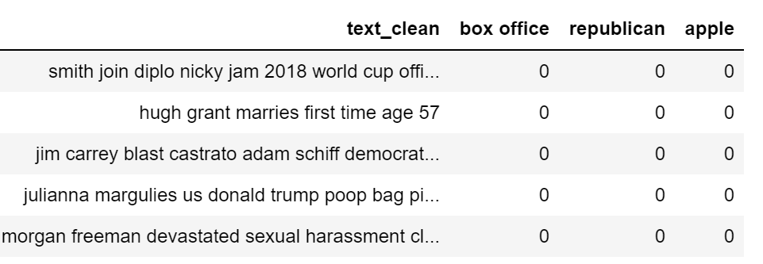
可视化相同信息的好方法是 词云 ，其中每个标签的频率以字体大小和颜色显示。
| wc = wordcloud.WordCloud(background_color='black', max_words=100,
max_font_size=35)
wc = wc.generate(str(corpus))
fig = plt.figure(num=1)
plt.axis('off')
plt.imshow(wc, cmap=None)
plt.show()
|
单词向量
最近，NLP 领域开发了新的语言模型，这些模型依赖于神经网络结构，而不是更传统的 n-gram 模型。这些新技术是一组语言建模和功能学习技术，其中单词被转换成真实数字的载体，因此它们被称为 词嵌入 。
词嵌入模型通过构建选定单词之前和之后会出现的token的概率分布，将某个单词映射到矢量。这些模型已经迅速流行起来，因为一旦你有真正的数字，而不是字符串，你可以执行计算。例如，要查找相同上下文的单词，只需计算向量距离即可。
有几个 Python 库与这种模型配合工作。SpaCy是其中之一，但既然我们已经使用它，我将谈论另一个著名的包： Gensim。使用现代统计机器学习的无监督主题建模和自然语言处理的开源库。使用Gensim，我将加载一个预先训练的GloVe模型。 GloVe (Global Vectors) 是一种无人监督的学习算法，用于获取大小为 300 的单词的矢量表示。
| nlp = gensim_api.load("glove-wiki-gigaword-300")
|
我们可以使用此对象将单词映射到向量：
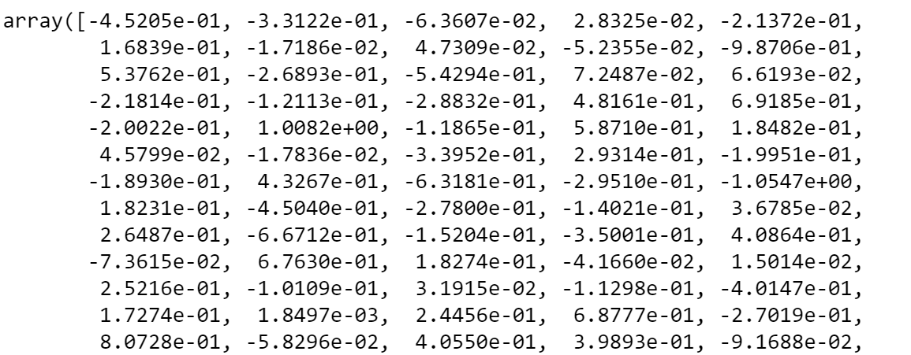
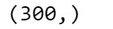
现在，让我们看看什么是最接近的单词矢量，或者换句话说，这些词大多出现在类似的上下文中。为了在二维空间中绘制向量图，我需要将维度从 300 减少到 2。我用Scikit-learn的t-SNE(t-distributed Stochastic Neighbor Embedding)做到这一点。t-SNE 是可视化高维数据的工具，可将数据点之间的相似性转换为联合概率。
1
2
3
4
5
6
7
8
9
10
11
12
13
14
15
16
17
18
19
20
21 | ## find closest vectors
labels, X, x, y = [], [], [], []
for t in nlp.most_similar(word, topn=20):
X.append(nlp[t[0]])
labels.append(t[0])
## reduce dimensions
pca = manifold.TSNE(perplexity=40, n_components=2, init='pca')
new_values = pca.fit_transform(X)
for value in new_values:
x.append(value[0])
y.append(value[1])
## plot
fig = plt.figure()
for i in range(len(x)):
plt.scatter(x[i], y[i], c="black")
plt.annotate(labels[i], xy=(x[i],y[i]), xytext=(5,2),
textcoords='offset points', ha='right', va='bottom')
## add center
plt.scatter(x=0, y=0, c="red")
plt.annotate(word, xy=(0,0), xytext=(5,2), textcoords='offset points',
ha='right', va='bottom')
|
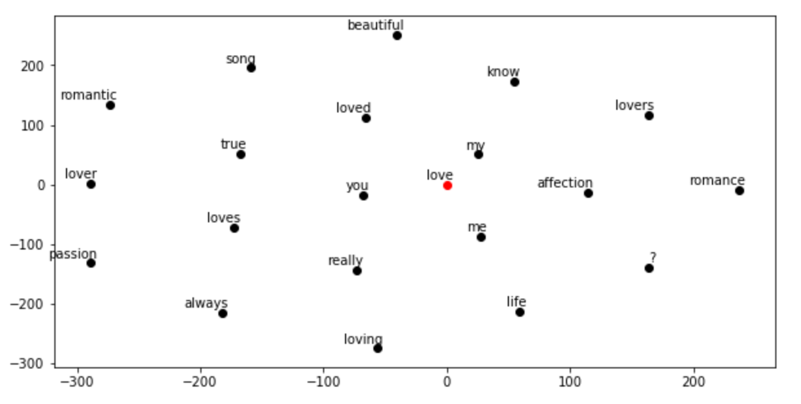
主题建模
Genism 包专门从事主题建模。主题模型是一种统计模型，用于发现文档集中发生的抽象"主题"。
我将展示如何使用 LDA（延迟 Dirichlet 分配）提取主题：一种生成统计模型，允许未观察的小组解释一组观测结果，从而解释为什么数据的某些部分相似。基本上，文档在潜在主题上以随机混合表示，每个主题的特点是分布于单词。
让我们看看我们可以从技术新闻中提取哪些主题。我需要指定模型必须聚类的主题数，我将尝试使用3个主题：
1
2
3
4
5
6
7
8
9
10
11
12
13
14
15
16
17
18
19
20
21
22
23
24
25
26
27
28
29
30
31
32
33 | y = "TECH"
corpus = dtf[dtf["y"]==y]["text_clean"]
## pre-process corpus
lst_corpus = []
for string in corpus:
lst_words = string.split()
lst_grams = [" ".join(lst_words[i:i + 2]) for i in range(0,
len(lst_words), 2)]
lst_corpus.append(lst_grams)
## map words to an id
id2word = gensim.corpora.Dictionary(lst_corpus)
## create dictionary word:freq
dic_corpus = [id2word.doc2bow(word) for word in lst_corpus]
## train LDA
lda_model = gensim.models.ldamodel.LdaModel(corpus=dic_corpus, id2word=id2word, num_topics=3, random_state=123, update_every=1, chunksize=100, passes=10, alpha='auto', per_word_topics=True)
## output
lst_dics = []
for i in range(0,3):
lst_tuples = lda_model.get_topic_terms(i)
for tupla in lst_tuples:
lst_dics.append({"topic":i, "id":tupla[0],
"word":id2word[tupla[0]],
"weight":tupla[1]})
dtf_topics = pd.DataFrame(lst_dics,
columns=['topic','id','word','weight'])
## plot
fig, ax = plt.subplots()
sns.barplot(y="word", x="weight", hue="topic", data=dtf_topics, dodge=False, ax=ax).set_title('Main Topics')
ax.set(ylabel="", xlabel="Word Importance")
plt.show()
|
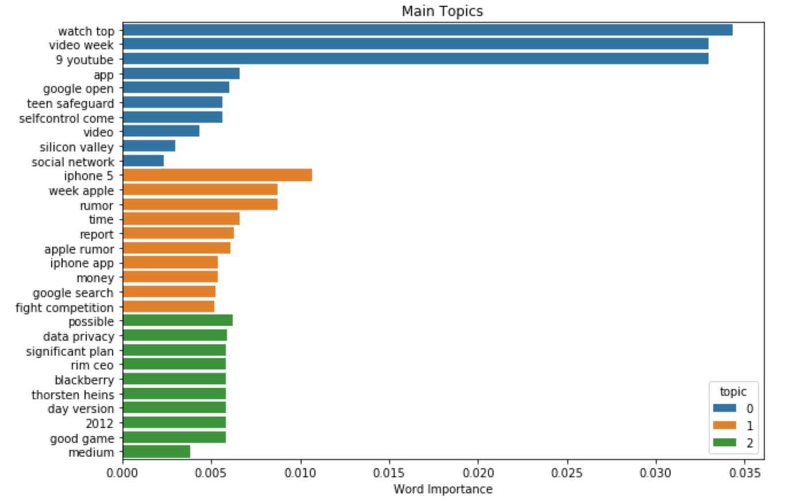
试图在短短3个主题中捕捉6年的内容可能有点困难，但正如我们所看到的，关于苹果公司的一切最终都在同一个主题中。
结论
本文是一个教程，以演示 如何分析文本数据与NLP和提取特征的机器学习模型 。
我展示了如何检测数据所处于的语言，以及如何预处理和清理文本。然后， 我解释了不同的长度测量， 用 Textblob 做了情绪分析， 我们使用 Spacy 进行命名实体识别。最后，我解释了传统单词频率方法与使用Gensim的现代语言模型之间的区别。
现在，您几乎知道所有 NLP 基础知识，可以开始处理文本数据。
凡本网注明"来源：XXX "的文/图/视频等稿件，本网转载出于传递更多信息之目的，并不意味着赞同其观点或证实其内容的真实性。如涉及作品内容、版权和其它问题，请与本网联系，我们将在第一时间删除内容！
作者: Mauro Di Pietro
来源： https://towardsdatascience.com/text-analysis-feature-engineering-with-nlp-502d6ea9225d